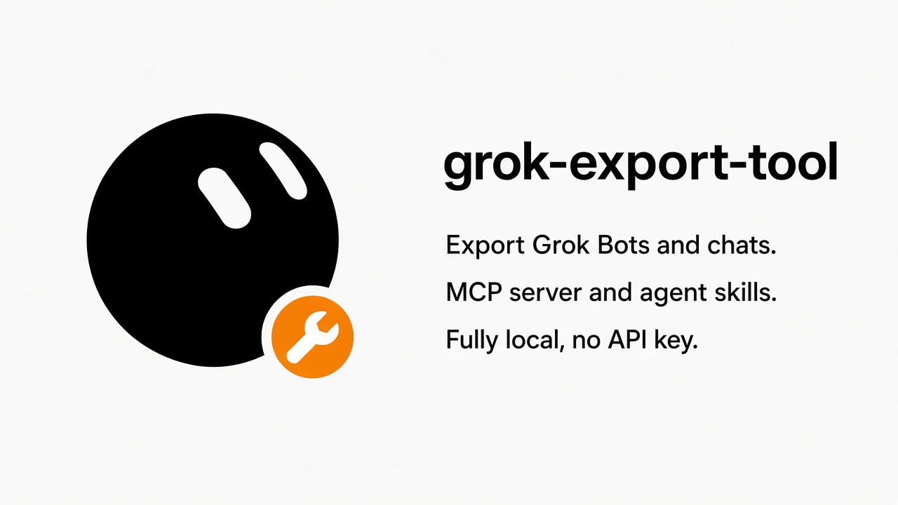

Local · Your account · No API key
grok-export-tool
Export your Grok Bots and regular chats. A local CLI, an MCP server, and agent skills. Fully local, no API key.
A local exporter for the Chrome session already logged in to grok.com: Grok Bots with attachments, and regular Grok chats. It reads history you already have. It does not send new chats.

Features
- Every Grok Bot the signed-in Chrome session can see: roster, full transcript, and attachments, in parallel 4 MB chunks.
- Regular Grok chats in a second folder: Markdown, raw JSON, and one combined JSONL file.
- A local CLI for Bots, regular chats, or both, with a messages-only option for Bots.
- A stdio MCP server with no third-party dependencies:
list_bots,get_bot,search. It reads the Bot archive. - An Agent Skill at
.claude/skills/grok-export/for Claude Code, OpenCode, and other agents.
macOS reads Chrome through the Keychain. Windows can use DPAPI. Linux is best-effort, and every platform can pass --cookie. Chat export records text and raw JSON; it does not download attachment files.
Quick start
git clone https://github.com/LofiSu/grok-export-tool.git
cd grok-export-tool
python3 -m venv .venv
source .venv/bin/activate
python3 -m pip install -r requirements.txt
python3 grok-bot-export.py # Bots, with attachments
python3 grok-bot-export.py --messages-only # Bots, text only
python3 grok-bot-export.py --mode chat # regular chats
python3 grok-bot-export.py --mode all # bothOn macOS the first run asks for the Keychain item Chrome Safe Storage. Allow it. Windows and Linux can use --cookie when automatic decryption fails. Output goes to ~/Downloads/ unless you pass a directory. Progress lines are in Chinese. Step-by-step help is in the tutorial.
Tutorial
The same guide, in both languages, here and in the repo. It covers install, each mode, the archive, MCP, skills, and the failures that actually happen.
MCP
grok-bot-mcp.py speaks MCP over stdio. Pass it the Bot export directory. It does not open a network connection, and it does not index a regular chat export.
OpenCode configuration, Claude Code, Codex, and Cursor are written out in the guide.
Output layout
Bots land in ~/Downloads/grok-bot-export-YYYYMMDD/. Each Bot is a numbered folder with messages.jsonl, conversation.md, transcript.json, and attachments/. Start with _index.md.
Regular chats land in ~/Downloads/grok-chat-export-YYYYMMDD/, with one Markdown file and one JSON file per conversation. With --mode all and a directory you chose, chats are written to that path plus -chat.
Disclaimer
Maintained by the community, in the open. It is not published by xAI. grok.com’s interfaces can change without notice. Back up an account you own, and follow grok.com’s terms. Treat the export folder as private.